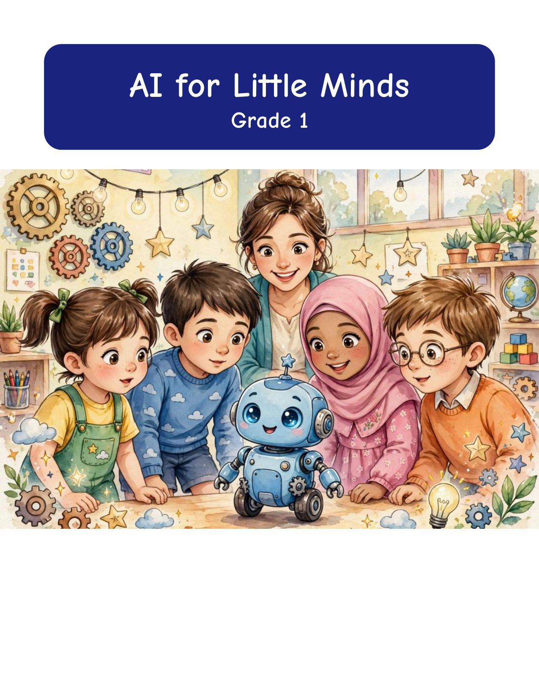

AI FOR LITTLE MINDS
🤖 AI for Little Minds — Grade 1
An activity-based first book of artificial intelligence for young children —
stories, play and hands-on activities with Sara and Bolt the robot.

20 Chapters
6 Parts
87 Pages
📖 Read the Book — Free
What Is Inside?
PART 1
Thinking Like a Computer
- 1What Is Thinking?
- 2Finding Patterns
- 3Step by Step
- 4Sorting and Groups
PART 2
Machines That Help Us
- 5Machines Around Me
- 6What Do Machines Do?
- 7Machines Follow Steps
PART 3
Smart Machines
- 8What Makes Something Smart?
- 9How AI Learns
- 10Talk to a Machine
- 11AI Can Be Wrong
PART 4
Meet the Robots
- 12Parts of a Robot
- 13What Robots Do
- 14Build a Paper Robot
PART 5
Being Kind with Technology
- 15Ask Before You Tap
- 16Be Kind Online
- 17My Private Things
PART 6
Little Problem Solvers
- 18What Is a Problem?
- 19Try, Try Again
- 20My First Project